homepage
O meni
Video
Vježba 1
U prvoj vježbi sam radila svoj font
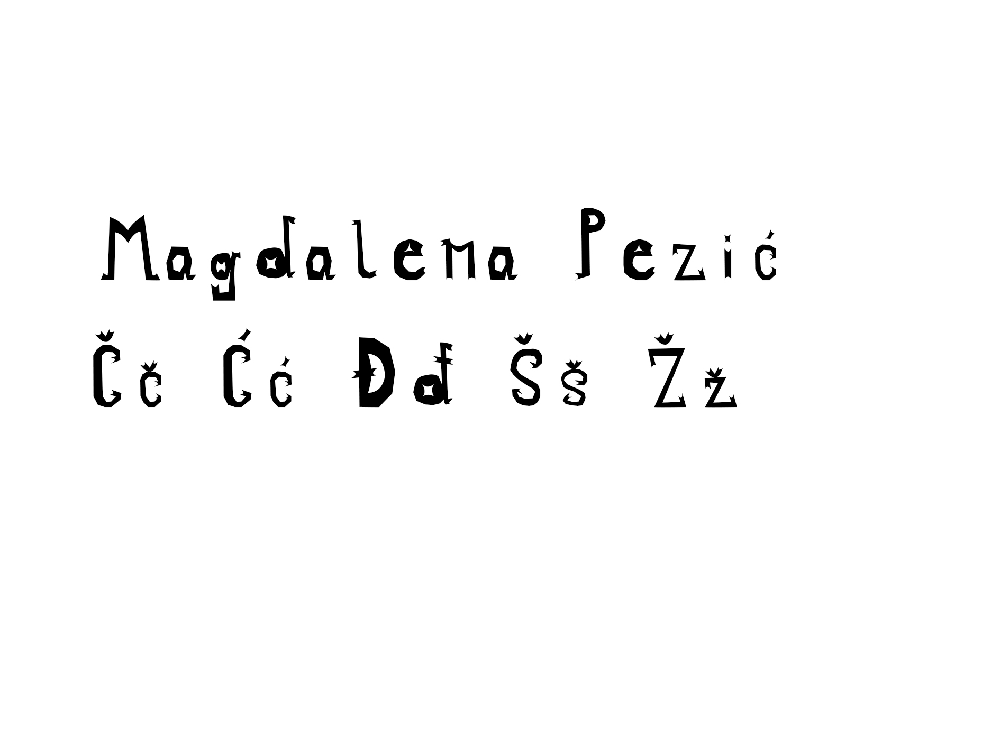
Vježba 2
U drugoj vježbi zadatak je bio kreirati Bezierove krivulje unutar slova našeg fonta iz prve vježbe.
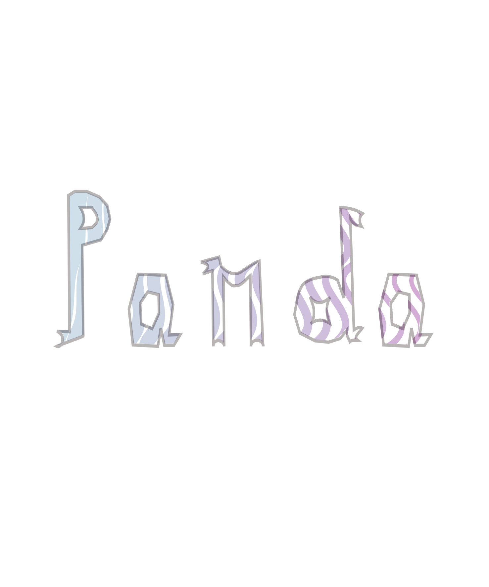
Vježba 3
Zadatak treće vježbe bio je nacrtati konture odabrane slike predloška sa alatom Pen, te oblike aplicirati s pet drugačijih boja kreiranih u novoj Color grupi.
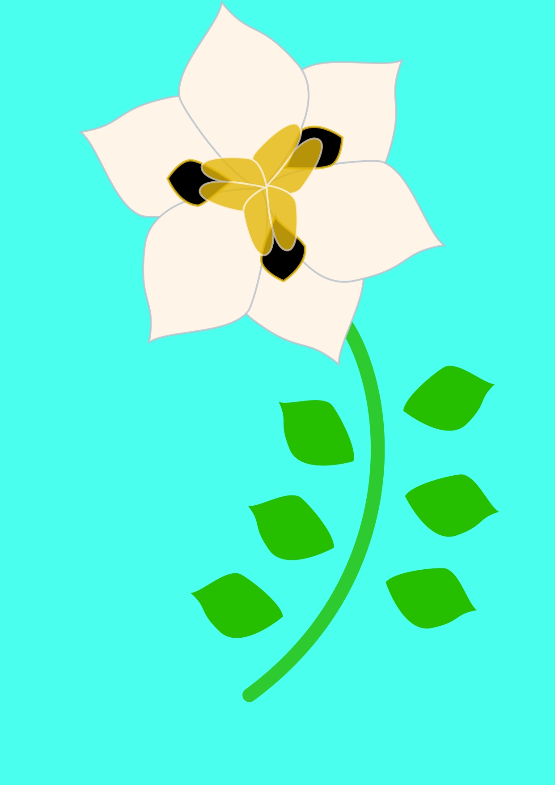
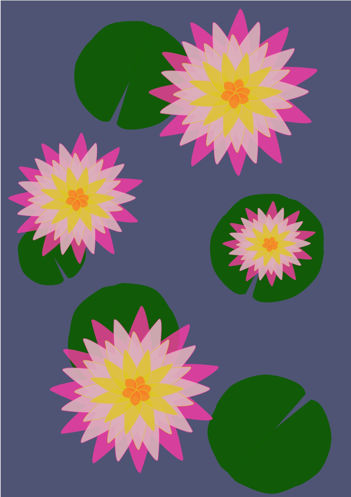
Vježba 4
U četvrtoj vježbi sam trebala kreirati složeni objekt u kojemu sam koristila tehnike spajanja i izrezivanja objekata i primijeniti različite vrste gradijenata i transparencije.
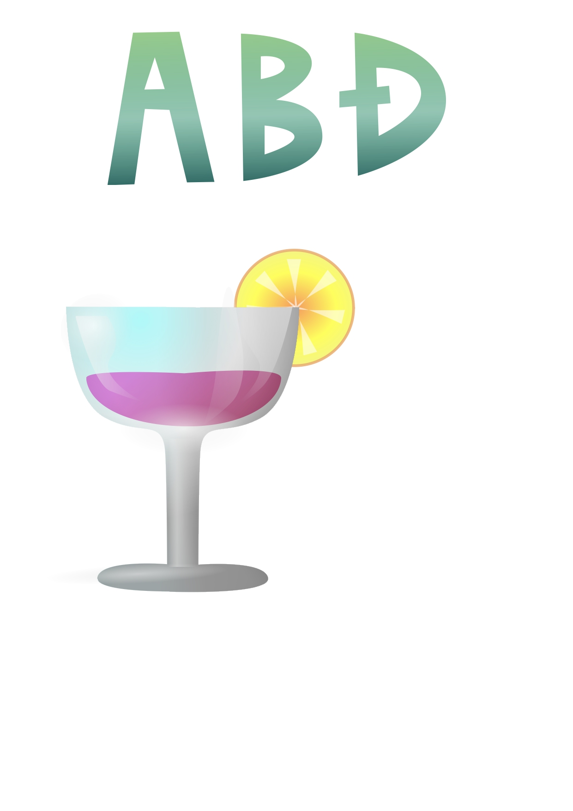
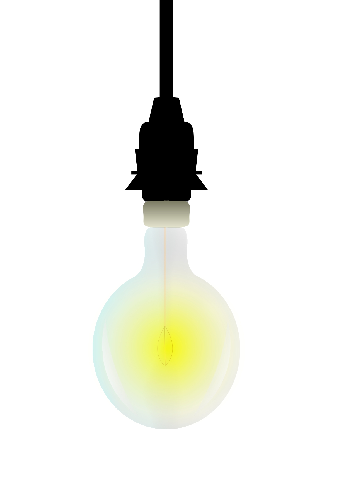
Projektni zadatak 1
U prvom projektnom zadatku trebali smo iskoristiti znanje prvih četiri vježbi kako bi smo iz zadanog predloška kreirali vlastitu sliku.
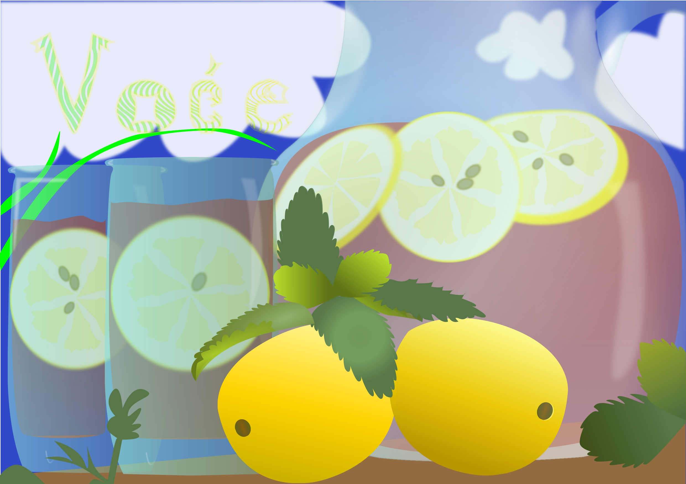
Vježba 5
Za vježbu 5 nam je bilo zadano korištenje tehnike digitalnog retuširanja fotografija za postizanje realističnog efekta
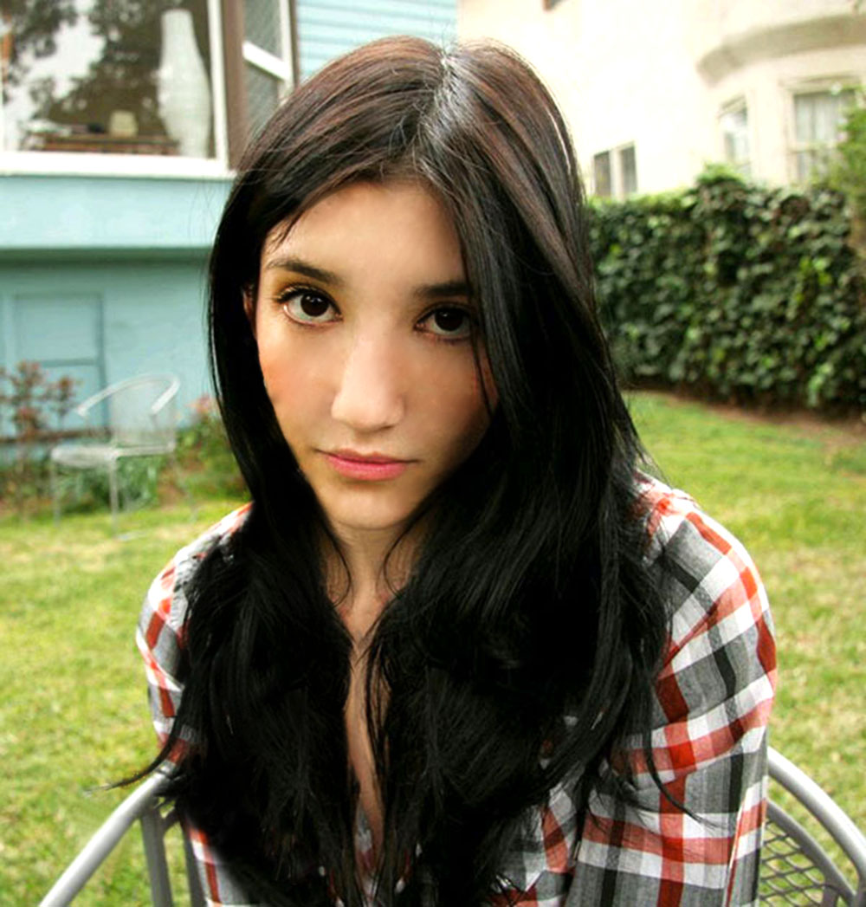
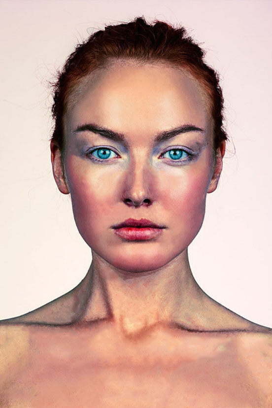
Vježba 6
U vježbi 6 smo prolazili kroz tehnike neinvazivnog koloriranja slike koje se može primijeniti na crno-bijele slike ili slike u boji kojima želimo promijeniti nijansu određenih područja.
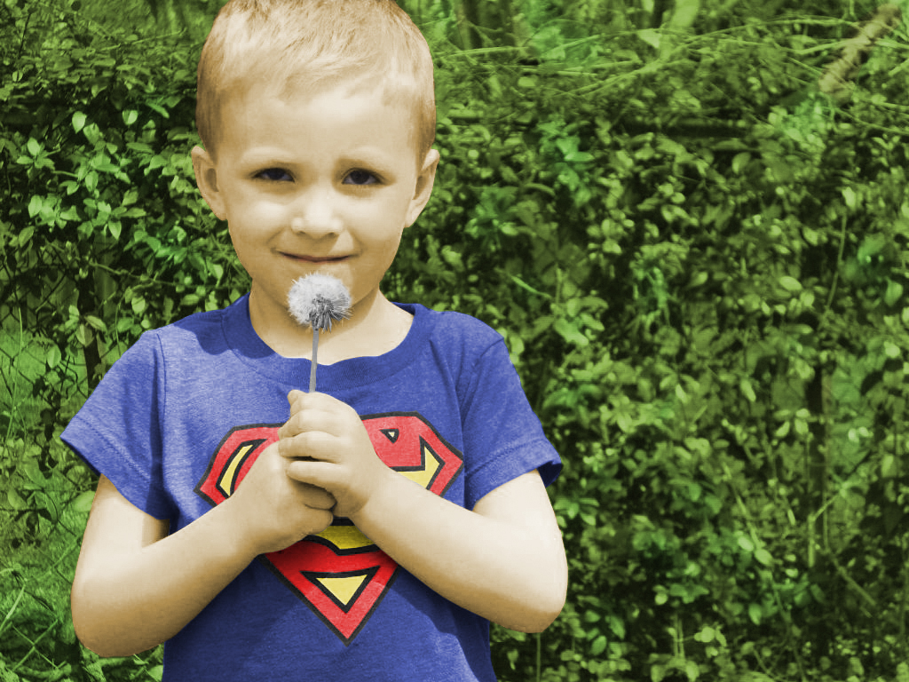
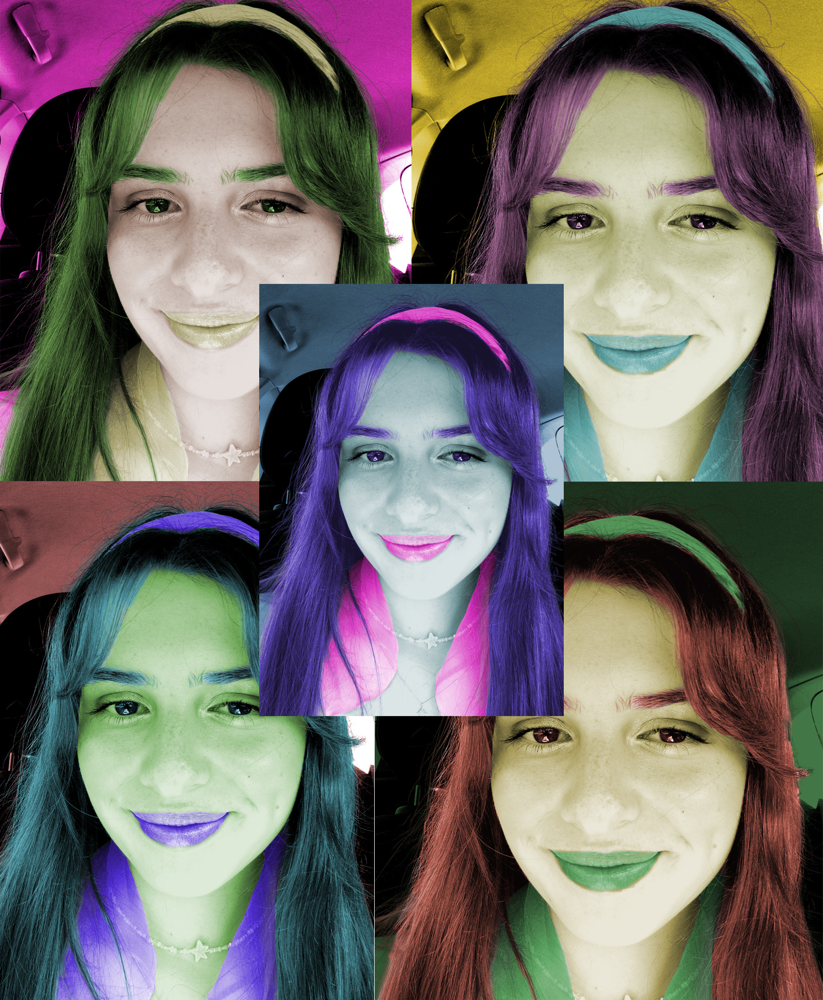
Vježba 7
Cilj sedme vježbe je bio kombiniranje više fotografija izrezivanjem dijelova različitih slika i spajanjem u jednu cjelinu kako bi smo dobili fotomontažu.
 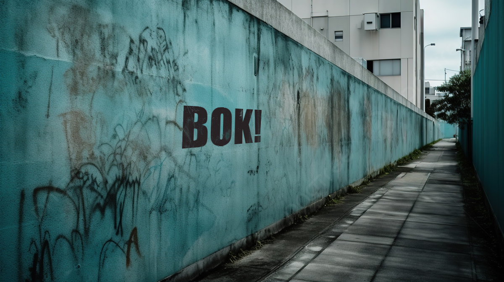
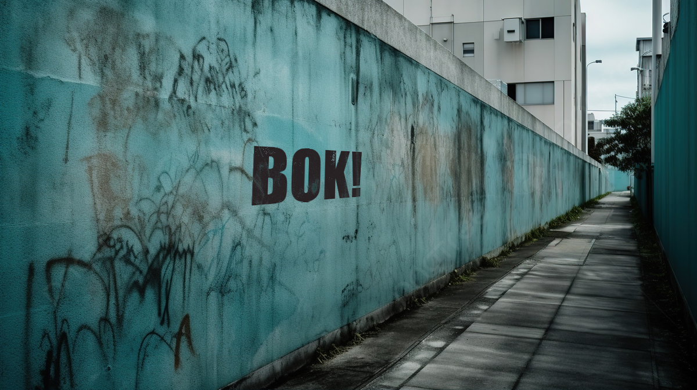
Projektni zadatak 2
Potrebno je bilo kreirati sliku u Adobe Photoshopu ili GIMPu kao kompoziciju više fotografija koristeći tehnike retuširanja, fotomontaže i koloriranja.
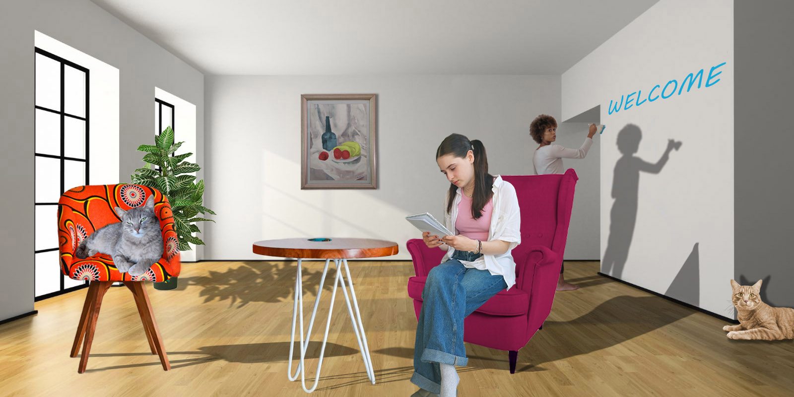
Vježba 8
Zadatak za vježbu osam nam je bio stvoriti kinemagraf,a to je video isječak koji se beskonačno ponavlja, najčešće u GIF formatu, i spaja pokretnu i statičnu grafiku. Dok je veći dio slike statičan, samo je mali dio animiran.


Vježba 9
U devetom zadatku smo izrezali dva video isječka te im dodali barem tri efekta (npr. scale, rotation, efekti boja...) i jedan statični i jedan pomični tekst na različitim pozicijama.
Vježbe 10 i 11
U ovim vježbama smo trebali napraviti svoju web stranicu
magdalena_pezic